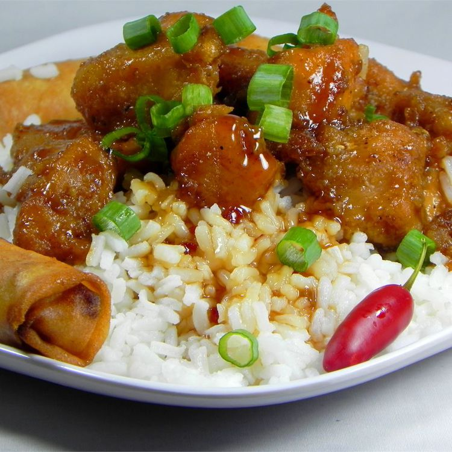

General Tsao's Chicken

Description
This recipe was voted one of the top 10 dishes in Columbus by Columbus Monthly Magazine, as prepared by Chef Paul
Kaewprasart of the Siam Oriental Restaurant. I modified it slightly, and it goes great over white rice as a main
dish for any number of people.
Taken from allrecipes.com
Ingredients
- ½ cup cornstarch
- ¼ cup water
- 1 ½ teaspoons minced garlic
- 1 ½ teaspoons minced fresh ginger root
- ¾ cup white sugar
- ¼ cup soy sauce
- ¼ cup white wine vinegar
- ½ cup hot chicken broth
- 1 teaspoon monosodium glutamate (MSG)
- 3 pounds skinless, boneless chicken breast halves, cut into bite size pieces
- ½ cup soy sauce
- 1 teaspoon ground white pepper
- 1 egg
- 1 cup cornstarch
- 1 cup vegetable oil
- 2 cups chopped green onions
- 16 chile peppers, sun-dried
Instruction
- To Make Sauce:
In a large bowl combine 1/2 cup cornstarch and 1/4 cup water. Mix together.
Add garlic, ginger, sugar, 1/4 cup soy sauce and white wine vinegar.
Then add chicken broth and monosodium glutamate and stir all together until sugar dissolves. Refrigerate
until needed.
- To Prepare Chicken:
In a separate bowl, combine chicken, 1/2 cup soy sauce and white pepper. Stir in egg. Add 1 cup
cornstarch and stir until chicken is evenly coated. Add oil to help separate chicken pieces.
Divide chicken into small quantities and deep fry at 350 degrees F (175 degrees C) until crispy. Drain on
paper towels.
- To Make Mixture:
Place a small amount of oil in wok and heat until wok is hot. Add scallions and dried chile
peppers and stir-fry briefly.
Remove sauce from refrigerator and stir. Add sauce to wok. Then add fried chicken and cook until sauce
thickens (add cornstarch or water as needed until sauce is as thick as you like it).
Back to Home